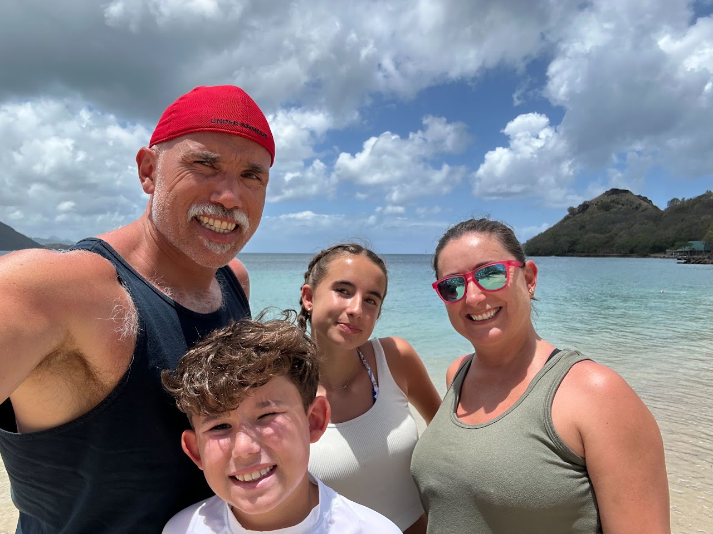

I love being outside comfort zone · Always learning
Roll‑Up‑My‑Sleeves
Product Leader
Aligning Teams, Reducing Noise & Shipping High‑Impact Products

∞
01 / Selected work
A few things
I've shaped.
From early ideas to shipped products, I like working where strategy, systems and a little bit of magic overlap.

02 / A little context
Versatile leader.
Results focused.
I'm a product-minded technology leader who thrives at the intersection of strategy and execution. I partner with engineering, design, and go-to-market teams to transform complex problems into high-impact products that scale.
With 8+ years of experience leading cross-functional initiatives from 0→1 and 1→N, I've developed expertise in product strategy, team alignment, and shipping solutions that matter. I'm comfortable as a player-coach—whether framing product bets, running programs, writing code, diving into data, or unblocking team deliverables. My north star is simple: maximize impact, reduce noise, and empower teams to move with purpose.
I've shaped this perspective through technical leadership roles across Brazil, Canada, Sweden, India, China, and the United States. When I'm not building products, you'll find me exploring new perspectives, staying curious about emerging technologies, or seeking the perfect espresso.
Get in touch ↗product & tech
products shipped
mindset
03 / My journey
Professional & Personal
sides of a rollercoaster.

Always Outside Comfort
My professional journey reflects a commitment to navigating complexity and driving transformative outcomes. I thrive in ambiguous environments where strategic clarity and operational excellence must coexist—bridging the gap between vision and delivery.
Over the past years, I've led cross-functional product initiatives spanning ideation to scale (0→1 and 1→N), orchestrating collaboration across engineering, design, go-to-market, and leadership teams. My approach centers on problem clarity, stakeholder alignment, and decisive execution. Whether defining product strategy, architecting systems, analyzing data, or unblocking team obstacles, I bring hands-on expertise to wherever impact is needed most.
My cross-technical domain experience spans automotive, telecommunications, IP and broadband infrastructure, and mixed reality—each requiring deep understanding of distinct technical constraints, regulatory landscapes, and market dynamics. This diversity has taught me to rapidly master domain complexities, translate specialized knowledge for broader audiences, and identify leverage points where technology and strategy intersect.
My global experience—spanning Brazil, Canada, Sweden, India, China, and the United States—has shaped a nuanced perspective on how teams, markets, and products intersect. This foundation enables me to translate business imperatives into structured execution, maintain momentum through uncertainty, and build cultures where impact and learning drive decision-making.


Built on Foundation
My foundation was built on discipline, resilience, and a commitment to excellence. Through competitive athletics, I learned that high performance requires strategic effort—balancing intensity with precision to achieve measurable results.
This mindset opened unprecedented opportunities: collaborating with exceptional individuals across continents, building lasting professional relationships, and earning recognition through dedicated pursuit of excellence. The lessons were clear: hard work compounds, global perspective matters, and pushing beyond comfort zones accelerates growth.
During my college years, I translated this philosophy into leadership, directing initiatives for the School of Engineering Athletics. Managing complex stakeholder relationships, coordinating cross-functional teams, and maintaining organizational momentum taught me how to drive results through people—a skill that became central to my professional trajectory.
Today, my greatest development variable is my family. Being a father to two growing kids has redefined my understanding of purpose, resilience, and impact. They challenge me daily to practice what I preach—to stay curious, embrace growth, and lead by example. Balancing ambitious professional goals with presence as a parent has sharpened my ability to prioritize what truly matters, make decisive trade-offs, and build meaningful connections—lessons that extend far beyond family into every aspect of work and leadership.
04 / Start a conversation